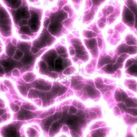
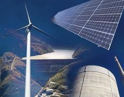
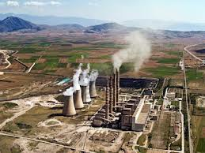
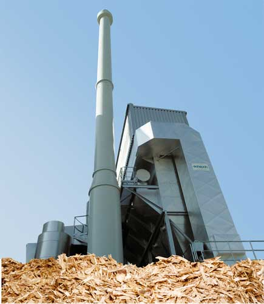
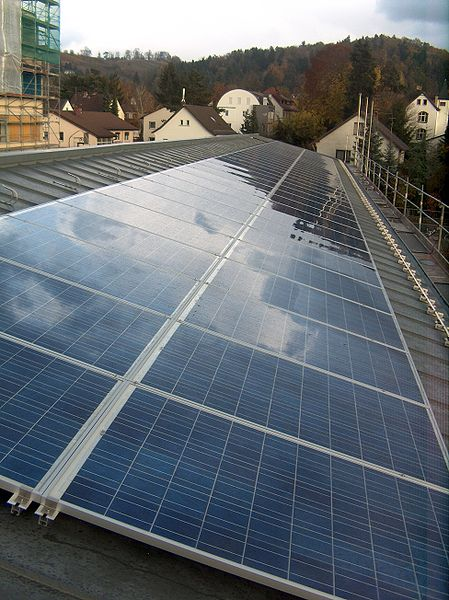
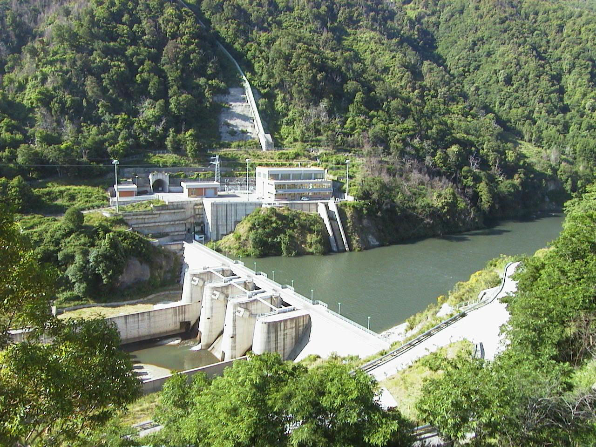
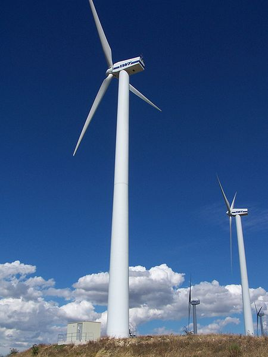

| ARGOMENTO | DESCRIZIONE | IMMAGINE |
|---|---|---|
| ENERGIA | In fisica, l'energia potenziale elettrica, anche detta energia potenziale elettrostatica, è l'energia potenziale del campo elettrostatico. Si tratta dell'energia posseduta da una distribuzione di carica elettrica, ed è legata alla forza esercitata dal campo generato dalla distribuzione stessa. Insieme all'energia magnetica, l'energia potenziale elettrica costituisce l'energia del campo elettromagnetico. L'energia potenziale elettrostatica può essere definita come il lavoro svolto per creare una distribuzione di carica partendo da una configurazione iniziale in cui ogni componente della distribuzione non interagisce con gli altri. Ad esempio, per un sistema discreto di cariche essa coincide con il lavoro svolto per portare le singole cariche da una posizione in cui esse hanno potenziale elettrico nullo alla loro disposizione finale L'energia potenziale elettrostatica può anche essere definita a partire dal campo elettrostatico generato dalla distribuzione stessa, ed in tale caso la sua espressione è indipendente dalla sorgente del campo. L'energia potenziale elettrica può essere sia negativa che positiva, a seconda che il lavoro svolto per portarle nella configurazione assunta sia positivo o negativo. Due cariche interagenti dello stesso segno hanno energia positiva, poiché il lavoro svolto per avvicinarle deve vincere la loro repulsione, mentre per lo stesso motivo due cariche di segno opposto hanno energia negativa. |  |
| PRODUZIONE ENERGIA | La produzione di energia elettrica rappresenta il 'primo passaggio' nel processo che conduce dalla produzione fino all'utilizzatore finale di energia elettrica. Le altre fasi del processo sono la trasmissione di energia elettrica e la distribuzione di energia elettrica. Tipicamente la produzione avviene per conversione sempre a partire da una fonte primaria di energia attraverso le centrali elettriche e regolata dal dispacciamento (produzione centralizzata) oppure attraverso sistemi di autoproduzione attestati sulla rete elettrica di distribuzione (produzione distribuita). La maggior parte delle tecniche di produzione di elettricità sono basate sull'uso di vapore in pressione, per cui dell'acqua pressurizzata viene scaldata a temperature molto elevate (talvolta anche oltre 600°) grazie all'utilizzo di una fonte di energia primaria; il vapore surriscaldato espande in una turbina a sua volta collegata ad un alternatore. Solo il fotovoltaico, l'eolico, l'idroelettrico, il turbogas e poche centrali nucleari si discostano da questa modalità. |  |
| CENTRALI A COMBUSTIBILE | I combustibili fossili consistono in depositi di organismi morti, la materia organica impiega secoli per formarsi e consiste principalmente di carbonio e idrogeno legati. Esistono tre tipi di combustibili fossili che possono essere usati per la produzione energetica: carbone, olio e gas naturale. Il carbone e' un combustibile fossile formatosi nell'arco di milioni di anni dal decadimento della vegetazione: i depositi si trasformano in carbone quando strati vengono compattati e riscaldati nel tempo. Il carbone e' molto abbondante rispetto agli altri combistibili fossili e degli studi analitici sostengono che se le riserve di petrolio si esauriranno il suo consumo mondiale aumentera' notevolmente. Le attuali riserve di carbone potrebbero durare per 200 anni o piu'. Il carbone viene estratto dalle miniere e dalla meta' del 20esimo secolo il suo consumo e' duplicato, per poi decrescere leggermente dal 1996 a causa dello sviluppo di petrolio e gas naturale. I paesi in via di sviluppo consumano quasi esclusivamente carbone perche' non possono permettersi petrolio e gas naturale. Anche Cina e India sono tra i principali consumatori di carbone. Il petrolio e' un combustibile fossile gassoso che si forma da depositi di microorganismi marini formatisi sul fondo del mare. Dopo milioni di anni i depositi finiscono in rocce o sedimenti dove l'olio e' intrappolato in piccoli spazi dai quali puo' essere estratto tramite trivellazione da apposite piattaforme. Il petrolio e' il combustibile piu' usato al mondo. L'olio crudo consiste in molti diversi organsmi che sono trasformati tramite processo di raffinazione, e' usato un automobili, jets, coperture stradali, tetti e in molte altre applicazioni. Il petrolio non si trova ovunque sulla terra e di conseguenza e' causa di guerre tra i vari paesi, per esempio la Guerra del Golfo del 1991. Il gas naturale e' un combustibile fossile gassoso versatile, abbondante e relativamente pulito rispetto a carbone e petrolio. Come quest'ultimo si forma da depositi di migroorganismi marini morti, e' un tipo di energia piuttosto giovane, finmo al 1999 veniva usato piu' carbone di gas naturale, ma oggi il consumo di gas naturale ha superato quello del carbone nei paesi sviluppati, ma la gente teme che le riserve di gas naturale si esauriranno come quelle di petrolio, alcuni scienziati hanno addirittura previsto che cio' avverra' prima della fine del 21esimo secolo. Il gas naturale consiste per la maggior parte di metano (CH4), compresso in piccoli volumi a grande profondita'. Come il petrolio e' portato in superficie tramite trivellazione. |  |
| CENTRALI A COMBUSTIBILE NATURALE | Il ramo più innovativo della nostra impresa è quello relativo alla produzione di legno sminuzzato o cippato. A causa di una domanda sempre maggiore d’impianti di riscaldamento a massa biologica e quindi di legno cippato, abbiamo recentemente investito in un grande trituratore il cui rendimento supera i 100 metri cubi l’ora. Con il nostro trituratore mobile possiamo processare tronchi fino a 70 cm di diametro mentre i tronchi più grandi vengono elaborati da una tenaglia idraulica ad alta pressione. Per il trasporto del cippato, disponiamo di veicoli porta container con volumi da 40 a 95 metri cubi. |  |
| PANNELLI FOTOVOLTAICI | Un impianto fotovoltaico è un impianto elettrico costituito essenzialmente dall'assemblaggio di più moduli fotovoltaici, i quali sfruttano l'energia solare incidente per produrre energia elettrica mediante effetto fotovoltaico, della necessaria elettronica ed eventualmente di sistemi meccanici-automatici ad inseguimento solare. |  |
| CENTRALI IDROELETRICHE | Per centrale idroelettrica si intende una serie di opere di ingegneria idraulica posizionate in una certa successione, accoppiate ad una serie di macchinari idonei allo scopo di ottenere la produzione di energia elettrica da masse di acqua in movimento. L'energia prodotta dalle centrali idroelettriche è da classificarsi a tutti gli effetti come energia rinnovabile in quanto, almeno in teoria, l'acqua può essere riutilizzata infinite volte per lo stesso scopo senza subire un processo di depurazione. Il concetto di rinnovabilità è subordinato alla costanza del volume annuo degli afflussi integrali. |  |
| CENTRALI EOLICHE | L'energia eolica è l'energia ottenuta dal vento ovvero il prodotto della conversione dell'energia cinetica, ottenuta dalle correnti d'aria, in altre forme di energia (elettrica o meccanica). Oggi viene per lo più convertita in energia elettrica tramite una centrale eolica, mentre in passato l'energia del vento veniva utilizzata immediatamente sul posto come energia motrice per applicazioni industriali e pre-industriali (come ad esempio nei mulini a vento). Di fatto è stata la prima forma di energia rinnovabile, assieme a quella idraulica, scoperta dall'uomo dopo il fuoco (si pensi alle vele delle navi) e una tra quelle a sostegno della cosiddetta economia verde nella società moderna. Le applicazioni più tipiche sono i parchi eolici, sebbene possa essere sfruttata anche in installazioni stand-alone su piccola scala. |  |